DAVID G. SIMPSON
Personal Web Site
| Home |
| Blog |
| Personal |
| Professional |
| Software |
| Photos |
| Reference |
| Nanopedia |
| Wiki |
| Contact Me |
| NASA Site |
| PGCC Site |
| SCHS Site |
| Esperanto |
| Moon Rocks |
| S-M Comics |
| Mouse Site |
| Art Gallery |
| N.Y. Home |
| Page 1 |
NEW YORK PHOTO ALBUM: PAGE 1
| 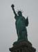 The Statue of Liberty. I took the ferry to Liberty Island, and got this close-up picture. It was raining hard the whole time I was there. |
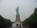 An unusual view from the back of the Statue of Liberty. |
|
| 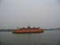 The Staten Island Ferry. |
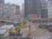 Ground Zero. This picture was taken at the World Trade Center subway station. The area was surrounded by this screen, but you can see some of the clean-up work going on. |
|
| 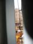 The cross at Ground Zero. Some steel beams had fallen in the shape of a cross, and became this memorial of the September 11 attacks. |
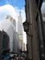 The Empire State Building. |
|
| 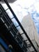 The Empire State Building from the base. |
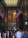 The Empire State Building from inside. I took an elevator to the observatory on the 86th floor, and from there took another elevator to observatory on the 102nd (top) floor. |
|
| 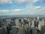 View of Manhattan (including Central Park) from the 102nd floor of the Empire State Building. |
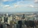 Another view of New York City from the 102nd floor. |
|
| 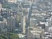 The Flatiron Building, seen from the 102nd floor of the Empire State Building. |
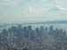 The Manhattan financial district, as seen from the 102nd floor. The World Trade Center would have been in the center of this picture. |
|
| 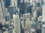 New York City often seemed to be a forest of buildings. |
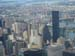 The Chrylser Building, as seen from the Empire State Building. I could see the Chrysler Building from my room at the Hotel Pennsylvania. |
|
| 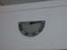 The elevator dial on the 102nd floor of the Empire State Building. The 102nd floor was really very small. There was just a narrow walkway going around the floor in a circle, maybe 30 feet in circumference. There was barely room for two people to get past each other in the walkway. |
{kind=link}
{kind=link}
{kind=link}
{kind=link}
{kind=link}
{kind=link}
{kind=link}
{kind=link}
{kind=link}
{kind=link}
{kind=link}
{kind=link}
{kind=link}
{kind=link}
{kind=link}
| Page 1 of 1 |
|---|
Contact Information
I may be contacted at: